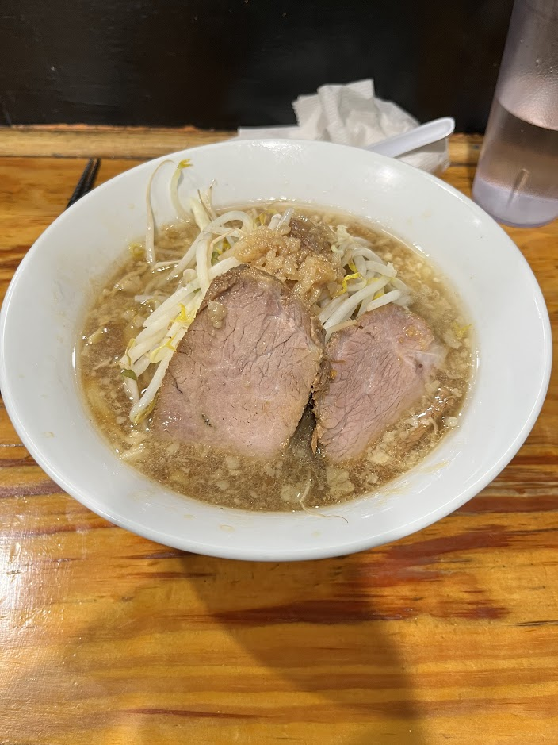

Yume wo Katare - Jiro-style Ramen

- Price: $18
- Rating: 8/10
- Last date I had it : 2025-05-24
- Review: my second time trying jiro, this time in cambridge. overall, a really balanced bowl, you ofc have everything you expect, super strong garlicky soup w/ tons of oil and flavor, the noodles and chashu had great texture, and overall very filling. Probably one of the best bowls of ramen I’ve had in America. My only gripe is that I couldn’t really customize the toppings: they just assume you want everything in a “moderate” amount. I definitely wanted a lighter soup w/ a shit ton more veggies as that style would help to take in this heavy monstrosity. that being said, this bowl was nonetheless solid, and the shop had an interesting atmosphere where customers can shout out their “dreams” if they finish their entire bowl (including the soup). I didn’t participate in that, I was just god damn hungry.